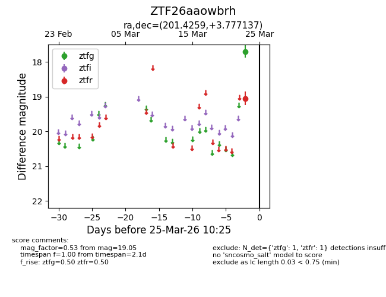
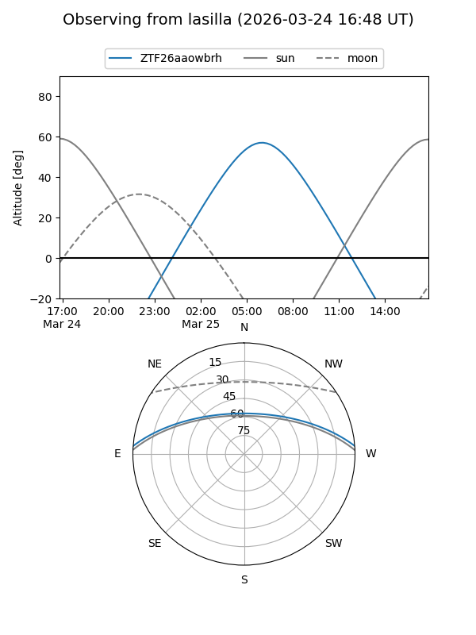
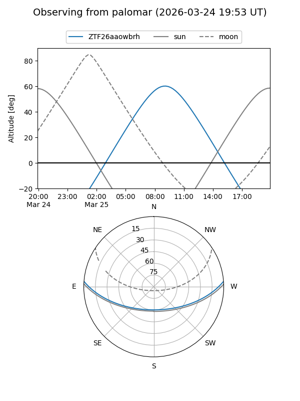

ZTF26aaowbrh
Target ZTF26aaowbrh at 2026-03-25 10:28
Aliases and brokers:
FINK: link
Lasair: link
ALeRCE: link
alt names
ZTF26aaowbrh (ztf,fink_ztf)
Coordinates:
equatorial (ra, dec) = 201.4259,+3.77714
equatorial (HMS+DMS) = 13:25:42.21,+03:46:37.69
galactic (l, b) = (323.7313,+65.25586)
Flags:
Photometry:
last ztfg=17.70, ztfr=19.05
1 ztfg, 1 ztfr detections
Lightcurve

Visibility


Additional plots